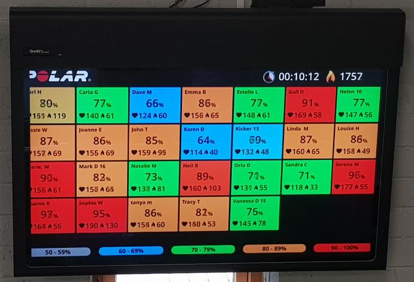

Our Fitness Classes consists of about 20 people for an hour-long session. We hold 10 Fitness Classes a week which comprise of both men and women. These classes consist of circuit courses which means your whole body gets a workout as you are doing different things. In these classes we use The Polar System. This is when each client wears a heart monitor. The client inputs their age, weight, height and activity levels into the Polar System. Everyone signs in to the system before starting their workout. The readings are displayed on a screen so everyone can see how they are getting on. The readings produce different colours - grey, blue, green, orange and red - to show the intensity zone they are in. It also shows the amount of calories burned and your heart rate readings during the workout and also your recovery pace afterwards. As each client can see their readings it pushes them further. Every session is recorded on the Polar System. Our trainers can access the system to see the overall progress of their clients and a collective progress over a period of time. Each person receives an email after their workout so they can keep their own record. We also offer each client weigh-ins and measurements taken.
